Speakers/mengtafels
ons assortiment
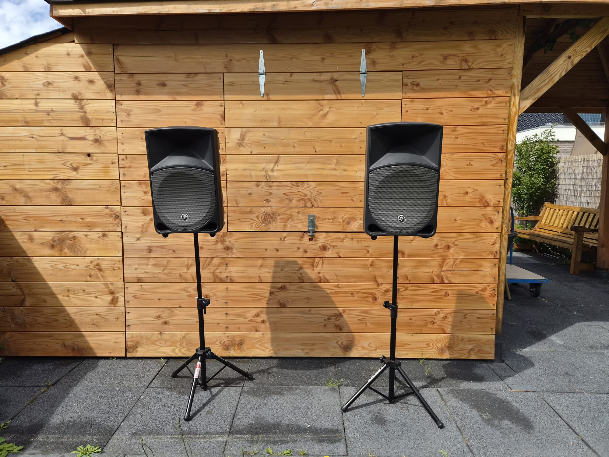
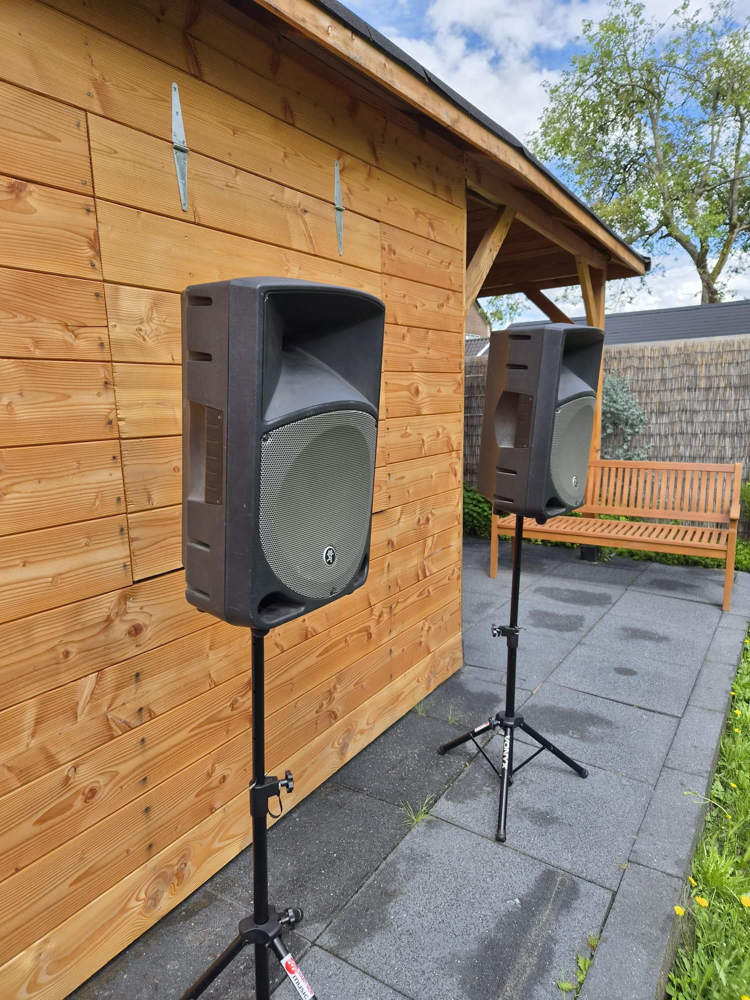
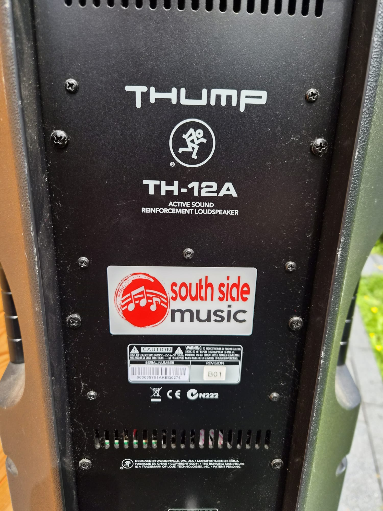
Mackie Thump 12 actieve Full-Range luidspreker
De Mackie Thump TH-12A is een robuuste en krachtige 12 inch actieve speaker die uitstekend presteert bij feesten, evenementen en presentaties tot circa 200-250 personen. Deze actieve luidspreker levert helder, krachtig geluid met een stevige bas en is ontworpen voor intensief gebruik. Kenmerken: 12" woofer + hoge frequentie driver voor een gebalanceerd, krachtig geluid Ingebouwde versterker (actief) Stevige, draagbare behuizing met handgrepen Meerdere ingangen (XLR + jack) Zeer betrouwbaar en bekend om zijn prijs-kwaliteit verhouding Perfect als main speaker of in combinatie met een subwoofer Of je nu muziek draait, een band laat spelen of speeches laat horen: de Thump TH-12A zorgt voor helder en krachtig geluid,(
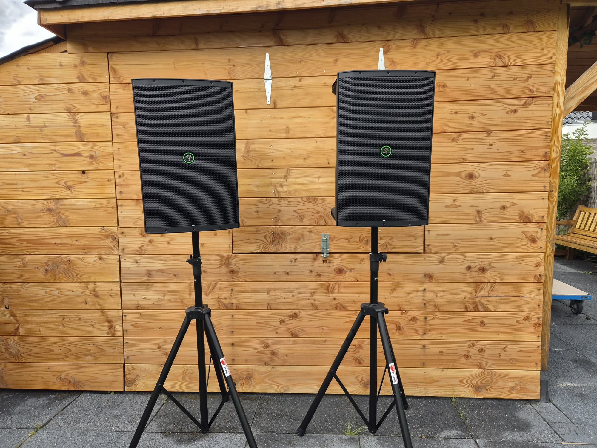
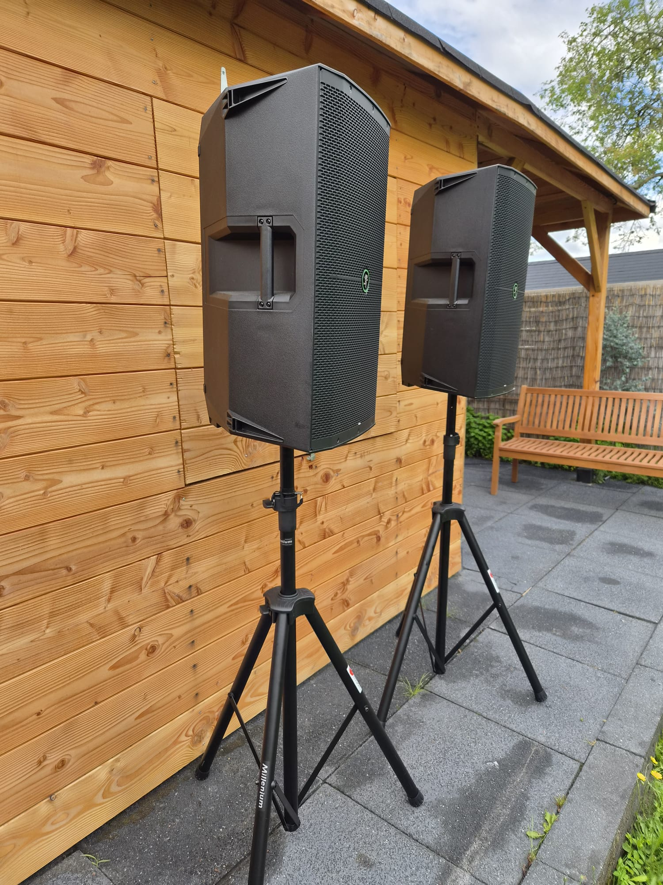
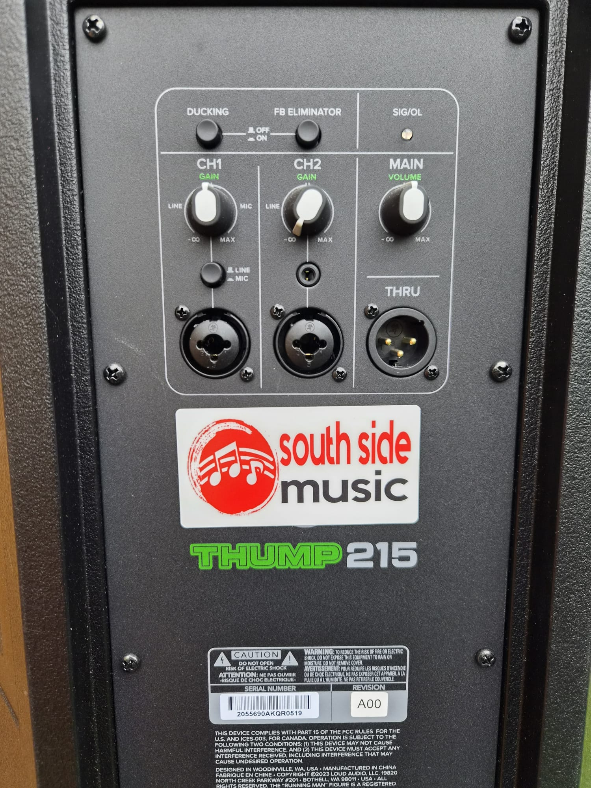
Mackie thump 215 actieve Full-Range luidspreker
Op zoek naar écht krachtig geluid? De Mackie Thump 215 is een robuuste 15 inch actieve speaker die zorgt voor een flinke dosis volume en helderheid. Met een vermogen van 1400W per stuk is dit ideaal voor grotere feesten, partytenten en evenementen tot 250+ personen. Kenmerken: Krachtige 15" woofer voor diepe bas en hoge geluidsdruk Actieve versterking (ingebouwde power amp) Handige ingangen met gain control (line/mic) Ducking-functie en feedback eliminator voor optimaal gebruik Stevige behuizing met handgrepen voor makkelijk transport Thru-aansluiting om meerdere speakers te linken Deze Thump 215 levert een vol, professioneel geluid en is ideaal als main speaker voor feesten, live muziek of als aanvulling op een subwoofer.
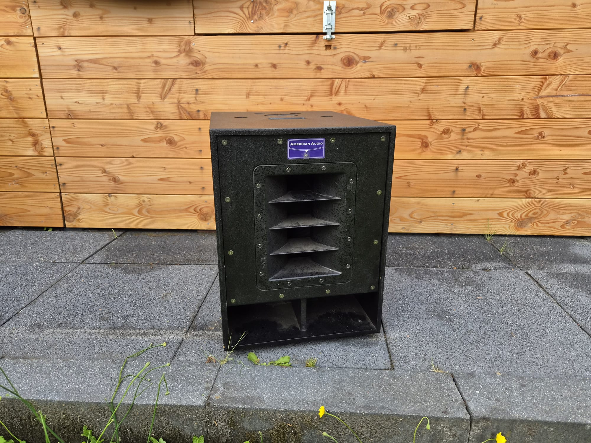
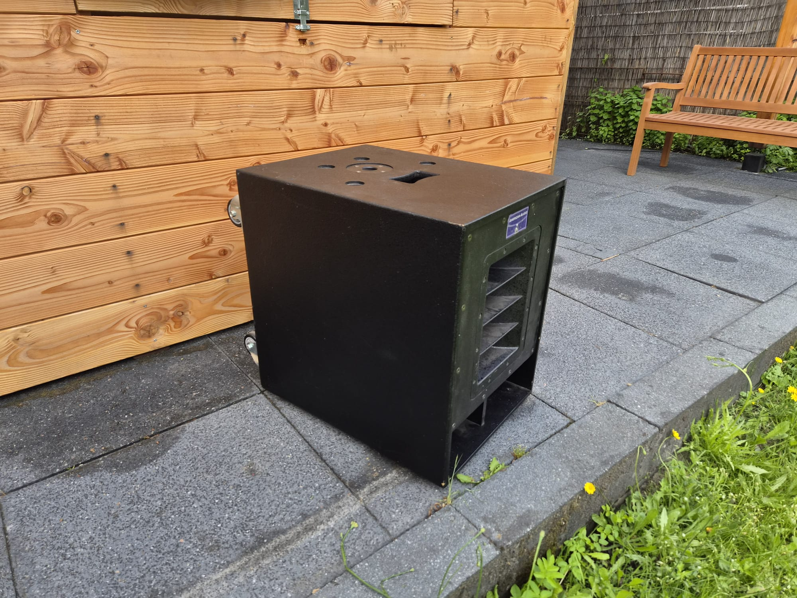
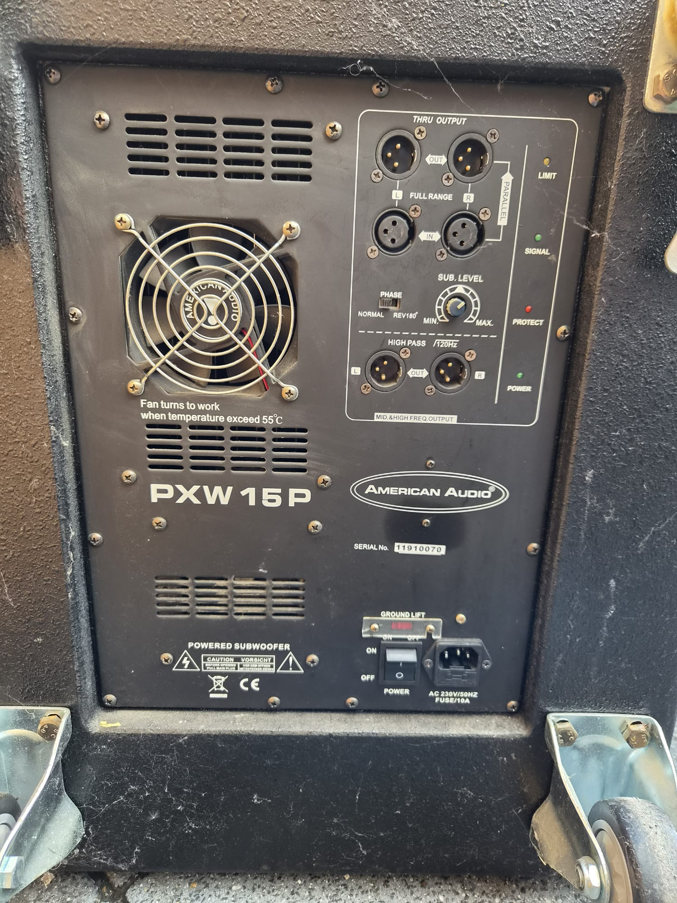
American Audio Subwoofer
reng diepe, krachtige bas naar je evenement met de American Audio PXW 15P powered subwoofer! Deze actieve 15 inch subwoofer levert indrukwekkende lage frequenties en zorgt voor een volle, professionele sound. Of je nu dance, live muziek of achtergrondmuziek draait: deze sub zorgt voor die lekkere “feel” die je gasten voelen. Betrouwbaar, robuust en altijd klaar voor gebruik. Huur nu deze top subwoofer en maak je geluidsinstallatie compleet! Perfect te combineren met onze andere geluidsets.
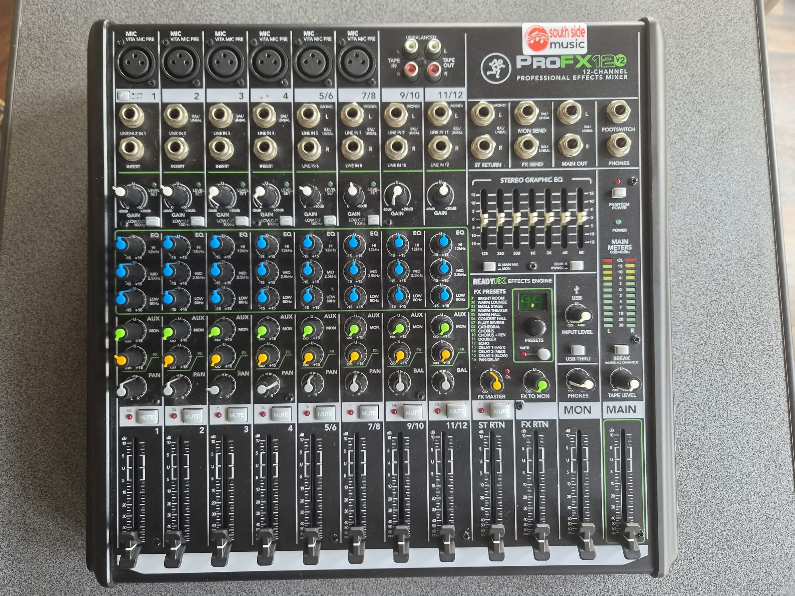
Mengtafel 12 kanaals
Zoek je een betrouwbare en veelzijdige mengtafel voor je evenement? De Soundcraft PROFX12v2 is een topper in zijn klasse en ideaal voor feesten, bands, presentaties en feesten tot circa 250 personen. Kenmerken: 12 kanalen met hoogwaardige microfoonvoorversterkers Ingebouwde ReadyFX effectenprocessor met veel presets (reverb, delay, chorus etc.) 3-bands EQ per kanaal + hoogwaardige Ghost preamps USB-aansluiting voor directe opname of afspelen via laptop Stereo graphic EQ, phantom power en veel aansluitmogelijkheden Compact, overzichtelijk en gebruiksvriendelijk.Huur deze Soundcraft PROFX12v2 en til je geluid naar een hoger niveau! Neem contact op Of je nu een live band mixt, microfoons voor sprekers regelt of achtergrondmuziek combineert met spraak: deze mengtafel levert kristalhelder geluid met professionele mogelijkheden.
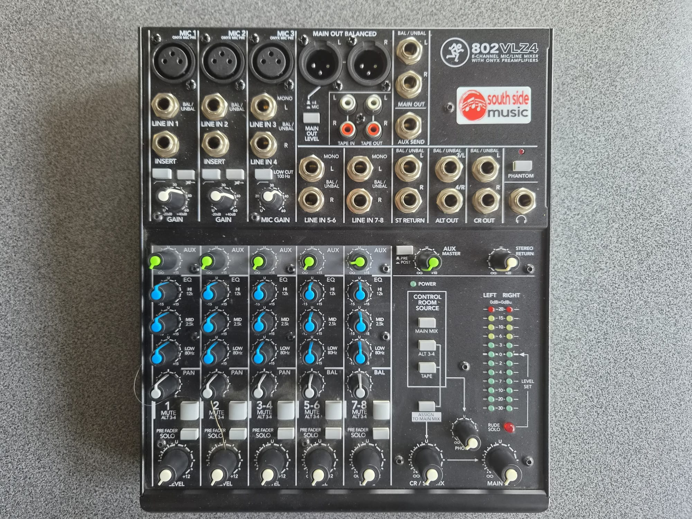
Mengtafel 8 kanaals
Op zoek naar een betrouwbare, compacte en professionele mengtafel voor kleinere tot middelgrote evenementen? De Mackie 802VLZ4 is de ideale keuze! Deze mixer staat bekend om zijn uitstekende geluidskwaliteit en robuuste bouw, perfect voor feesten, presentaties, bands en feesten tot circa 150-200 personen. Kenmerken: 8 kanalen met hoogwaardige Onyx microfoonvoorversterkers 3-bands EQ per kanaal voor precieze klankregeling Zeer lage ruis en hoge headroom Meerdere uitgangen (Main, Control Room, Aux, etc.) Phantom power voor condensatormicrofoons Compact formaat – makkelijk mee te nemen en op te stellen Of je nu sprekers, microfoons, achtergrondmuziek of een kleine band mixt: de Mackie 802VLZ4 levert altijd helder en krachtig geluid.
Geluidsverhuur Prijslijst
Wij verhuren professionele geluidsapparatuur voor feesten, evenementen en partytenten in Assen en omgeving. Hieronder vind je onze scherpe prijzen (excl. btw).
| Product | Dag | Extra dag | Weekend | Week |
|---|---|---|---|---|
| 12" Speakers Mackie TH-12A |
€ 80,00 | € 60,00 | € 120,00 | € 300,00 |
| 15" Speakers Mackie Thump 215 |
€ 100,00 | € 80,00 | € 200,00 | € 420,00 |
| Subwoofer American Audio PXW15P |
€ 20,00 | € 15,00 | € 40,00 | € 65,00 |
| Mixer 8-kanaals Mackie 802VLZ4 |
€ 20,00 | € 15,00 | € 50,00 | € 80,00 |
| Mixer 12-kanaals Mackie ProFX12v2 |
€ 35,00 | € 25,00 | € 80,00 | € 150,00 |
Prijzen zijn exclusief BTW • Ophalen of bezorgen mogelijk in Assen en omgeving.